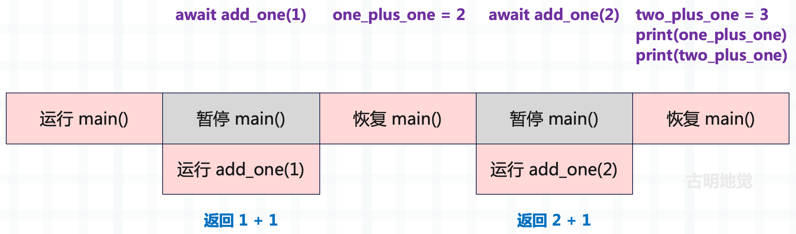
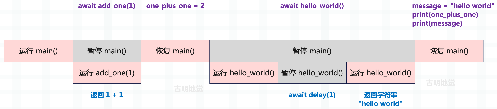
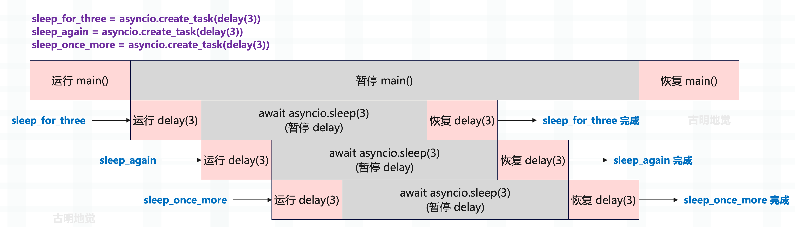
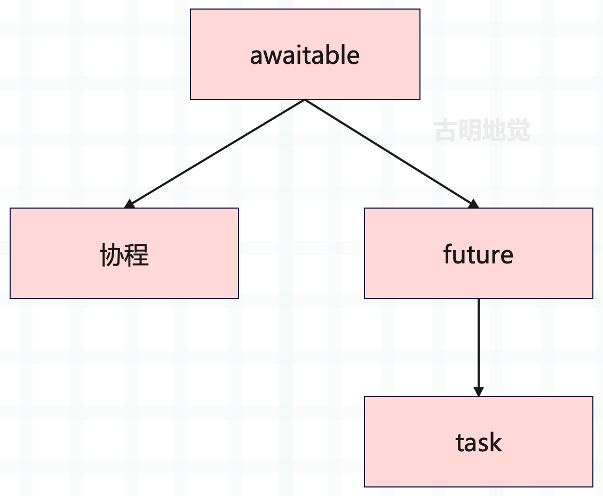
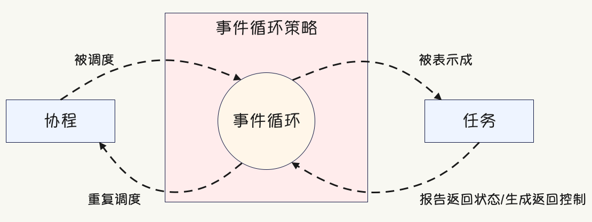
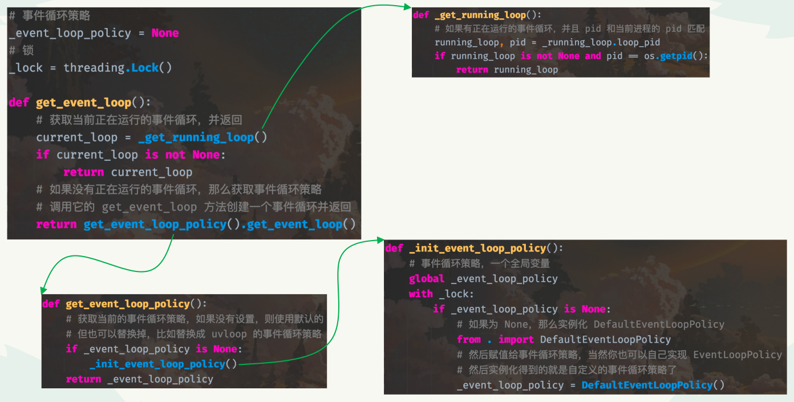
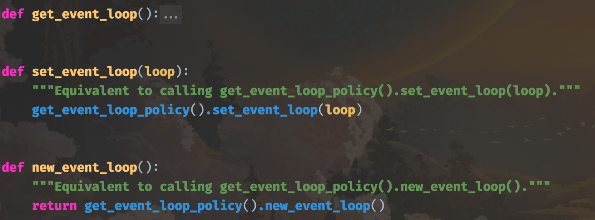
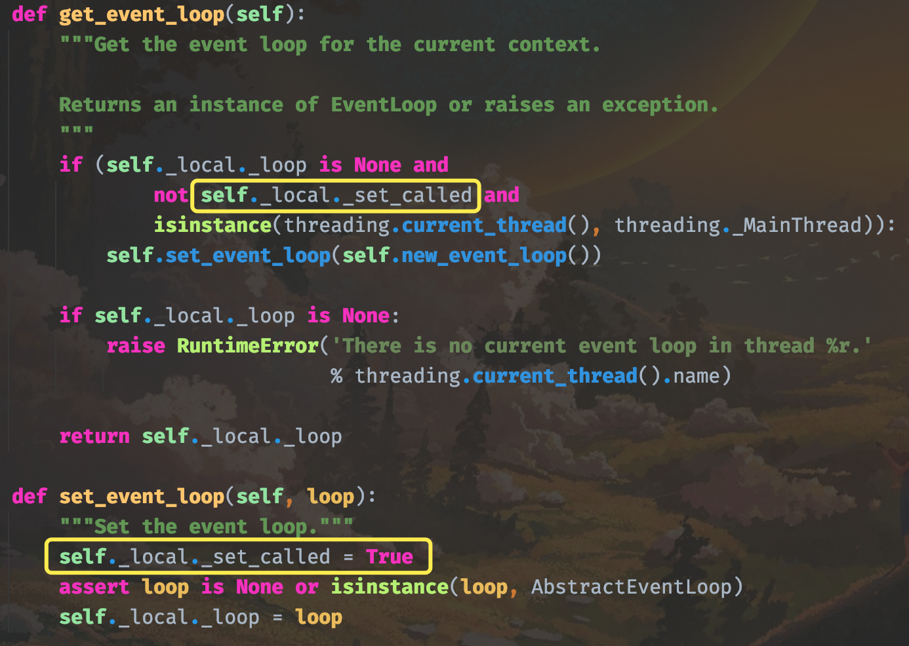

楔子
上一篇文章我们讨论了并发，以及如何使用非阻塞 IO 和事件循环来实现只有一个线程的并发，接下来我们将继续讨论在 asyncio 中使用单线程并发模型编写程序的基础知识。比如协程、任务、Future，它们之间的区别是啥，事件循环在 asyncio 中是如何体现的等等，本篇文章会全部说清楚。
关于协程
调用协程函数便可得到协程，协程本质上还是基于生成器实现的，它具备一个超能力：在遇到可能需要一段时间才能完成的操作时，能够暂停执行，当长时间运行的操作完成时，可唤醒暂停的协程，并执行该协程的后续代码。要定义协程函数，我们需要使用 Python 的 async 关键字，def 定义一个普通函数，调用之后直接执行，而 async def 会定义一个协程函数，调用之后得到协程。当有一个长时间运行的操作时，可以通过 await 关键字暂停当前协程，将执行权交出去。
# async 关键字将函数标记为协程函数，而不是普通的 Python 函数
async def coroutine():
print("hello world")
这是一个简单的协程函数，不执行任何长时间的操作，它只是输出信息并返回。这意味着，将协程放在事件循环中时，它将立即执行，因为没有任何阻塞 I/O，没有任何操作暂停执行。
async def coroutine_add_one(number):
return number + 1
def add_one(number):
return number + 1
function_result = add_one(1)
coroutine_result = coroutine_add_one(1)
print(function_result)
print(type(function_result))
"""
2
<class 'int'>
"""
print(coroutine_result)
print(type(coroutine_result))
"""
<coroutine object coroutine_add_one at 0x7fc5c9094ec0>
<class 'coroutine'>
"""
调用普通的 add_one 函数时，它会立即执行并返回期望的一个整数。但当调用 coroutine_add_one 时，并不会执行协程中的代码，而是得到一个协程对象。这一点很重要，调用协程函数时，只是创建了一个可以稍后执行的协程对象，要执行协程，需要在事件循环中执行。那么如何创建事件循环并执行协程呢？
在 Python3.7 之前的版本中，如果不存在事件循环，那么必须显式地创建一个事件循环。但从 3.7 开始，asyncio 库添加了几个抽象事件循环管理的函数，其中一个便是 asyncio.run，我们可以使用它来运行协程。
import asyncio
async def coroutine_add_one(number):
return number + 1
coroutine_result = asyncio.run(coroutine_add_one(1))
print(coroutine_result) # 2
正如期望的一样，我们正确地将协程放在了事件循环中，并执行了它。
那么 asyncio.run 都做了哪些事情呢？首先创建了一个全新的事件循环，一旦成功创建，就会运行传递给它的任何协程，直到完成，然后返回结果。最后 asyncio.run 还会对主协程完成后可能继续运行的内容进行清理，一切完成后，再关闭并结束事件循环。
既然 asyncio.run 最后会关闭事件循环，说明它适用于那些一次性的任务。而在实际项目中，我们都会手动创建事件循环，具体细节一会儿再说。
由于上面的例子中没有任何阻塞代码，所以也不一定非要使用协程，定义成普通函数也是可以的。asyncio 的真正优势是能暂停执行，让事件循环在长时间运行的操作期间，运行其它任务。如果要实现这一点，可以使用 await 关键字。
await 关键字之后通常会跟一个协程，更具体地说是一个被称为 awaitable 的对象，我们将在后续学习中了解关于 awaitable 的更多内容。
使用 await 关键字会运行它后面的协程，这与直接调用协程不同，因为直接调用只会产生一个协程对象。而 await 表达式会暂停它所在的协程，直到等待的协程完成并返回结果，然后唤醒 await 所在的协程。
import asyncio
async def add_one(number):
return number + 1
async def main():
# main() 协程将暂停执行，直到 add_one(1) 运行完毕
one_plus_one = await add_one(1)
# main() 协程将暂停执行，直到 add_one(2) 运行完毕
two_plus_one = await add_one(2)
print(one_plus_one)
print(two_plus_one)
asyncio.run(main())
"""
2
3
"""
在上面的代码中，我们两次暂停执行。首先等待对 add_one(1) 的调用，一旦得到结果，主函数将取消暂停并将 add_one(1) 的返回值分配给变量 one_plus_one。然后对 add_one(2) 执行相同的操作，并输出结果。我们将应用程序的执行流程可视化一下，如下图所示。

如果只从代码逻辑来看，目前该段代码的运行方式与正常的顺序代码并没有什么不同，实际上就是在模仿正常的调用堆栈。接下来，让我们看一个简单示例，说明如何通过在等待时引入虚拟休眠操作来运行其它代码。
使用 asyncio.sleep 引入长时间运行的协程
之前的例子没有使用任何长时间运行的操作，但为了充分了解协程的优势，并展示如何同时运行多个任务，需要引入一些长时间运行的操作。当然我们不会立即进行 Web API 或数据库查询，因为它们花费的时间是不确定的，我们会通过指定想要等待的时间来模拟长时间运行的操作。而实现这一点，可以通过 asyncio.sleep 函数，该函数可以让协程休眠指定的秒数，从而模拟对 Web API 或数据库进行长时间运行的调用情况。
由于 asyncio.sleep 本身是一个协程，所以必须将它与 await 关键字一起使用，如果单独调用它，会得到一个协程对象。既然 asyncio.sleep 是一个协程，这意味着当协程等待它时，其它代码也能够运行。
import asyncio
async def hello_world():
# 暂停 hello_world 协程一秒钟
await asyncio.sleep(1)
return "hello world"
async def main():
# 暂停 main 协程，直到 hello_world 协程运行完毕
message = await hello_world()
print(message)
asyncio.run(main())
"""
hello world
"""
运行这个应用程序时，程序将等待 1 秒钟，然后输出打印信息。由于 hello_world 是一个协程，使用 asyncio.sleep 将其暂停 1 秒，因此现在有 1 秒的时间可以同时运行其它代码。
import asyncio
async def delay(seconds):
print("开始休眠")
await asyncio.sleep(seconds)
print("休眠完成")
async def add_one(number):
return number + 1
async def hello_world():
await delay(1)
return "hello world"
async def main():
# 暂停 main()，直到 add_one(1) 返回
one_plus_one = await add_one(1)
# 暂停 main()，直到 hello_world() 返回
message = await hello_world()
print(one_plus_one)
print(message)
asyncio.run(main())
"""
开始休眠
休眠完成
2
hello world
"""
在 main 协程里面分别通过 await 驱动 add_one(1) 和 hello_world() 两个协程执行，然后打印它们的返回值，但是在打印 one_plus_one 之前需要等待一秒，因为在 hello_world() 协程里面 sleep 了一秒。但我们真正想要的结果是，在 await sleep 的时候，立刻执行其它的代码，比如立刻打印 one_plus_one，但实际情况却没有。
这是为什么呢？首先要搞清楚 await 关键字的含义，await hello_world() 表示暂停所在的协程，然后运行 hello_world() 协程，并等待它运行完成，而在此之前不会执行该协程中的任何其它代码。因为 hello_world() 内部 sleep 了 1 秒，所以主协程将暂停 1 秒，这种情况下代码表现得像是串行的一样。

事实上从源代码本身也能够理解，因为代码是一行一行写的，所以自然也要一行一行执行。而 await 后面跟一个协程之后，会驱动协程执行，并等到驱动的协程运行完毕之后才往下执行。因此这个逻辑就决定了，await 是串行的，一个 await 执行完毕之后才能执行下一个 await。如果想摆脱这种顺序模型，同时运行 add_one 和 hello_world，那么需要引入一个被称为 "任务" 的概念。
通过任务实现并行
前面我们看到，直接调用协程时，并没有把它放在事件循环中运行，相反会得到一个协程对象。如果想运行，要么通过 asyncio.run，要么在一个协程里面通过 await 关键字进行驱动（在 A 协程里面 await B 协程，如果 A 协程运行了，那么 B 协程也会被驱动）。虽然通过这些工具，可编写异步代码，但无法同时运行协程，要想同时运行，需要将协程包装成任务。
任务是协程的包装器，它安排协程尽快在事件循环上运行，并提供一系列的方法来获取协程的运行状态和返回值。这种调度和执行以非阻塞的方式发生，这意味着一旦创建一个任务，那么任务就会立刻运行。并且由于是非阻塞的，我们可以同时运行多个任务。
创建任务
创建任务是通过 asyncio.create_task 函数来实现的，当调用这个函数时，需要给它传递一个协程，然后返回一个任务对象。
import asyncio
async def delay(seconds):
print("开始休眠")
await asyncio.sleep(seconds)
print("休眠完成")
return f"睡了 {seconds} 秒"
async def main():
# 将 delay(3) 包装成任务，注：包装完之后就直接丢到事件循环里面运行了
# 因此这里会立即返回，而返回值是一个 asyncio.Task 对象
sleep_for_three = asyncio.create_task(delay(3))
print(f"sleep_for_three：{sleep_for_three.__class__}")
# 至于协程究竟有没有运行完毕，我们可以通过 Task 对象来查看
# 当协程运行完毕或者报错，都看做是运行完毕了，那么调用 Task 对象的 done 方法会返回 True
# 由于代码是立即执行，还没有到 3 秒钟，因此目前的打印结果为 False
print(f"协程（任务）是否执行完毕：{sleep_for_three.done()}")
# 这里则保证必须等到 Task 对象里面的协程运行完毕后，才能往下执行
result = await sleep_for_three
print(f"协程（任务）是否执行完毕：{sleep_for_three.done()}")
print(f"返回值：{result}")
asyncio.run(main())
"""
sleep_for_three：<class '_asyncio.Task'>
协程（任务）是否执行完毕：False
开始休眠
休眠完成
协程（任务）是否执行完毕：True
返回值：睡了 3 秒
"""
如果直接 await delay(3)，那么在打印之前需要至少等待 3 秒，但通过将它包装成任务，会立即扔到事件循环里面运行。此时主程序可以直接往下执行，至于协程到底什么时候执行完毕、有没有执行完毕，则通过 Task 对象（任务）来查看。当然你也可以 await 一个 Task 对象，保证里面的协程运行完毕后才能往下执行。
同时运行多个任务
由于任务是立即创建并计划尽快运行，这允许同时运行许多长时间的任务。
import asyncio
async def delay(seconds):
print("开始休眠")
await asyncio.sleep(seconds)
print("休眠完成")
async def main():
sleep_for_three = asyncio.create_task(delay(3))
sleep_again = asyncio.create_task(delay(3))
sleep_once_more = asyncio.create_task(delay(3))
await sleep_for_three
await sleep_again
await sleep_once_more
asyncio.run(main())
"""
开始休眠
开始休眠
开始休眠
休眠完成
休眠完成
休眠完成
"""
在上面的代码中启动了三个任务，每个任务需要 3 秒才能完成。但由于对 create_task 的每次调用都会立即返回，因此会立即到达 await sleep_for_three 函数，并且三个任务都丢到了事件循环，开启执行。由于 asyncio.sleep 属于 IO，因此会进行切换，所以三个任务是并发执行的，这也意味着整个程序会在 3 秒钟左右完成，而不是 9 秒钟。

随着我们添加更多任务，性能提升效果会更明显，比如启动了 10 个这样的任务，仍然只需要大约 3 秒，从而使速度提高 10 倍。我们再看个例子：
import asyncio
async def delay(seconds):
print("开始休眠")
await asyncio.sleep(seconds)
print("休眠完成")
return seconds
async def hello_from_second():
for i in range(10):
await asyncio.sleep(1)
print("你好，我每秒钟负责打印一次")
async def main():
sleep_for_three = asyncio.create_task(delay(3))
sleep_again = asyncio.create_task(delay(3))
await hello_from_second()
asyncio.run(main())
"""
开始休眠
开始休眠
你好，我每秒钟负责打印一次
你好，我每秒钟负责打印一次
休眠完成
休眠完成
你好，我每秒钟负责打印一次
你好，我每秒钟负责打印一次
你好，我每秒钟负责打印一次
你好，我每秒钟负责打印一次
你好，我每秒钟负责打印一次
你好，我每秒钟负责打印一次
你好，我每秒钟负责打印一次
你好，我每秒钟负责打印一次
"""
一旦协程被包装成任务，那么运行就开始了（被丢到事件循环中），而主程序依旧可以往下执行。然后执行 await hello_from_second()，此时程序会阻塞在这里，不管 await 后面跟的是协程对象还是基于协程封装的 Task 对象（任务），它都要求 await 后面的对象运行完毕并返回一个值之后，才能继续往下执行。
最终结果就如打印的那样，但需要注意的是，我们不能这样写。
async def main():
await hello_from_second()
sleep_for_three = asyncio.create_task(delay(3))
sleep_again = asyncio.create_task(delay(3))
如果是这种方式的话，那么必须等到 hello_from_second() 运行完毕后，下面的两个任务才能执行，因为 await 是阻塞的。同理下面的编写方式也不行：
async def main():
sleep_for_three = await asyncio.create_task(delay(3))
sleep_again = await asyncio.create_task(delay(3))
await hello_from_second()
还是那句话，协程被包装成 Task 对象的时候就已经开始运行了，你可以让主程序继续往下执行，也可以使用 await 让主程序等任务执行完毕，就像这段代码一样。但很明显，此时就相当于串行了，无法达到并发的效果。
最佳实践：在实际工作中，不要直接 await 一个协程，而是将协程包装成任务来让它运行。当你的代码逻辑依赖某个任务的执行结果时，再对该任务执行 await，拿到它的返回值。
取消任务和设置超时
网络连接可能不可靠，用户的连接可能因为网速变慢而中断，或者服务器崩溃导致现有的请求无法处理。因此对于发出的请求，需要特别小心，不要无限等待。如果无限等待一个不会出现的结果，可能导致应用程序挂起，从而导致精糕的用户体验。
在之前的示例中，如果任务一直持续下去，我们将被困在等待 await 语句完成而没有反馈的情况，也没有办法阻止这样的事情发生。因此 asyncio 提供了一个机制，允许我们手动取消任务，或者超时之后自动取消。
取消任务
取消任务很简单，每个任务对象都有一个名为 cancel 的方法，可以在想要停止任务时调用它。取消一个任务将导致该任务在执行 await 时引发 CancelledError，然后再根据需要处理它。
为说明这一点，假设启动了一个长时间运行的任务，但我们不希望它运行的时间超过 5 秒。如果任务没有在 5 秒内完成，就可以停止该任务，并向用户报告：该任务花费了太长时间，我们正在停止它。另外还可以每秒钟都输出一个状态更新，为用户提供最新信息，这样就可以让用户了解任务的运行状态。
import asyncio
async def delay(seconds):
print("开始休眠")
await asyncio.sleep(seconds)
print("休眠完成")
async def main():
long_task = asyncio.create_task(delay(10))
seconds_elapsed = 0
while not long_task.done():
print("检测到任务尚未完成，一秒钟之后继续检测")
await asyncio.sleep(1)
seconds_elapsed += 1
# 时间超过 5 秒，取消任务
if seconds_elapsed == 5:
long_task.cancel()
try:
# 等待 long_task 完成，显然执行到这里的时候，任务已经被取消
# 不管是 await 一个已经取消的任务，还是 await 的时候任务被取消
# 都会引发 asyncio.CancelledError
await long_task
except asyncio.CancelledError:
print("任务被取消")
asyncio.run(main())
"""
检测到任务尚未完成，一秒钟之后继续检测
开始休眠
检测到任务尚未完成，一秒钟之后继续检测
检测到任务尚未完成，一秒钟之后继续检测
检测到任务尚未完成，一秒钟之后继续检测
检测到任务尚未完成，一秒钟之后继续检测
检测到任务尚未完成，一秒钟之后继续检测
任务被取消
"""
在代码中我们创建了一个任务，它需要花费 10 秒的时间才能运行完成。然后创建一个 while 循环来检查该任务是否已完成，任务的 done 方法在任务完成时返回 True，否则返回 False。每一秒，我们检查任务是否已经完成，并记录到目前为止经历了多少秒。如果任务已经花费了 5 秒，就取消这个任务。然后来到 await long_task，输出 "任务被取消"，这表明捕获了一个 CancelledError。
关于取消任务需要注意的是，CancelledError 只能从 await 语句抛出。这意味着如果任务在执行普通 Python 代码时被取消，那么该代码将一直运行，直到触发下一个 await 语句（如果存在），才能引发 CancelledError。
import asyncio
async def delay(seconds):
print("开始休眠")
await asyncio.sleep(seconds)
print("休眠完成")
async def main():
long_task = asyncio.create_task(delay(3))
# 立刻取消
long_task.cancel()
# 但 CancelledError 只有在 await 一个取消的任务时才会触发
# 所以下面的语句会正常执行
print("我会正常执行")
print("Hello World")
print(list(range(10)))
await asyncio.sleep(5)
try:
# 引发 CancelledError
await long_task
except asyncio.CancelledError:
print("任务被取消")
asyncio.run(main())
"""
我会正常执行
Hello World
[0, 1, 2, 3, 4, 5, 6, 7, 8, 9]
任务被取消
"""
但是注意：如果任务在取消的时候已经运行完毕了，那么 await 的时候就不会抛 CancelledError 了。
import asyncio
async def delay(seconds):
print("开始休眠")
await asyncio.sleep(seconds)
print("休眠完成")
return seconds
async def main():
long_task = asyncio.create_task(delay(3))
await asyncio.sleep(5)
# 显然执行到这里，任务已经结束了
long_task.cancel()
try:
await long_task
print("任务执行完毕")
except asyncio.CancelledError:
print("任务被取消")
asyncio.run(main())
"""
开始休眠
休眠完成
任务执行完毕
"""
所以对一个已完成的任务调用 cancel 方法，没有任何影响。
设置超时并使用 wait_for 执行取消
每秒（或其它时间间隔）执行检查然后取消任务，并不是处理超时的最简单方法。理想情况下，我们应该有一个辅助函数，它允许指定超时时间，当任务在规定时间内没有完成时自动取消。asyncio 提供了一个 wait_for 函数实现此功能，该函数接收协程或任务对象，以及以秒为单位的超时时间。如果任务完成所需的时间超过了设定的超时时间，则会引发 TimeoutError，任务将自动取消。
为说明 wait_for 的工作原理，我们使用一个案例来说明：有一个任务需要 2 秒才能完成，但我们将它的超时时间设定为 1 秒。当得到一个 TimeoutError 异常时，我们将捕获异常，并检查任务是否被取消。
import asyncio
async def delay(seconds):
print("开始休眠")
await asyncio.sleep(seconds)
print("休眠完成")
return f"休眠了 {seconds} 秒"
async def main():
delay_task = asyncio.create_task(delay(2))
try:
result = await asyncio.wait_for(delay_task, 1)
print(f"返回值：{result}")
except asyncio.TimeoutError:
print("超时啦")
# delay_task.cancelled() 用于判断任务是否被取消
# 任务被取消：返回 True，没有被取消：返回 False
print(f"任务是否被取消：{delay_task.cancelled()}")
asyncio.run(main())
"""
开始休眠
超时啦
任务是否被取消：True
"""
应用程序运行 1 秒后，wait_for 函数将引发 TimeoutError，然后我们对其进行处理，并且 delay_task 被取消了。所以当一个任务超时的时候，会被自动取消。
所以通过 wait_for 函数就很方便，如果直接 await 一个任务，那么必须等到任务完成之后才能继续往下执行。如果任务一直完成不了，那么就会一直陷入阻塞。我们的目的是希望这个任务的执行时间是可控的，那么便可以使用 wait_for 并指定超时时间。注：使用 wait_for 必须要搭配 await，阻塞等待任务完成并拿到返回值、或者达到超时时间引发 TimeoutError 之后，程序才能往下执行。
因此 await 任务 和 await asyncio.wait_for(任务, timeout) 的效果是类似的，都是等待后面的任务完成并拿到它的返回值。但使用 wait_for 可以指定超时时间，在规定时间内如果没有完成，则抛出 TimeoutError，而不会一直陷入阻塞。
如果任务花费的时间比预期的长，在引发 TimeoutError 之后自动取消任务通常是个好主意，否则可能会有一个无限等待的任务，占用永远不会释放的资源。但在某些情况下，我们可能希望保持任务运行。例如，我们可能想通知用户：某任务花费的时间比预期的要长，但即便超过了规定的超时时间，也不取消该任务。为此，可使用 asyncio.shield 函数包装任务，这个函数将防止传入的任务被取消，会给它一个屏蔽，将取消请求忽略掉。
import asyncio
async def delay(seconds):
print("开始休眠")
await asyncio.sleep(seconds)
print("休眠完成")
return f"休眠了 {seconds} 秒"
async def main():
delay_task = asyncio.create_task(delay(2))
try:
# 通过 asyncio.shield 将 delay_task 保护起来
result = await asyncio.wait_for(asyncio.shield(delay_task), 1)
print(f"返回值：{result}")
except asyncio.TimeoutError:
print("超时啦")
# 如果超时依旧会引发 TimeoutError，但和之前不同的是
# 此时任务不会被取消了，因为 asyncio.shield 会将取消请求忽略掉
print(f"任务是否被取消：{delay_task.cancelled()}")
# 从出现超时的地方，继续执行，并等待它完成
result = await delay_task
print(f"返回值：{result}")
asyncio.run(main())
"""
开始休眠
超时啦
任务是否被取消：False
休眠完成
返回值：休眠了 2 秒
"""
取消和屏蔽会让人感到有些棘手，因为有几种值得注意的情况。下面来介绍一些基础但又很核心的知识，并随着讲解的案例越来越复杂，我们将更深入地探讨取消的工作原理。
任务、协程、Future 和 awaitable
相信你已经了解了协程和任务之间的关系，但任务和协程具体是如何关联的呢？要理解这一点，我们需要先了解 Future 和 awaitable。
Future 是 asyncio 提供的一个类，它的实例对象（future）我们称之为未来对象，future 包含一个你希望在未来某个时间点获得、但目前还不存在的值。通常当创建 future 时，它内部还没有任何值，在这种状态下，future 被认为是不完整的、未解决的或没有完成的。然后一旦得到结果，就可以设置 future 的值，这将完成 future。那时我们可以认为 future 已经完成，并可从中提取结果。
让我们尝试创建一个 future，然后设置它的值并提取该值。
import asyncio
# asyncio 里面有一个类 Future，实例化之后即可得到 future 对象
# 然后 asyncio 里面还有一个类 Task，实例化之后即可得到 task 对象（也就是任务）
# 这个 Task 是 Future 的子类，所以我们用的基本都是 task 对象，而不是 future 对象
# 但 Future 这个类和 asyncio 的实现有着密不可分的关系，所以必须单独拿出来说一说
future = asyncio.Future()
print(future) # <Future pending>
print(future.__class__) # <class '_asyncio.Future'>
print(f"future 是否完成：{future.done()}") # future 是否完成：False
# 设置一个值，通过 set_result
future.set_result("古明地觉")
print(f"future 是否完成：{future.done()}") # future 是否完成：True
print(future) # <Future finished result='古明地觉'>
print(f"future 的返回值：{future.result()}") # future 的返回值：古明地觉
调用类型对象 Future 便可创建一个未来对象 future，此时 future 内部还没有结果集，因此调用其 done 方法将返回 False。之后用 set_result 方法设置 future 的值，这将把 future 标记为已完成。或者还可以调用 set_exception，在 future 中设置一个异常。
必须在调用 set_result（设置结果）之后才能调用 result（获取结果），并且 set_result 只能调用一次，但 result 可以调用多次。
然后我们来看一下 Future 的源码，这里先只展示和当前介绍的内容相关的部分。
class Future:
def cancel(self):
# cancel 方法，负责取消一个 future
# 并且该方法有返回值，取消成功返回 True，取消失败返回 False
self.__log_traceback = False
# 检测状态是否为 PENDING，不是 PENDING，说明 future 已经运行完毕或取消了
# 那么返回 False 表示取消失败，但对于 future 而言则无影响
if self._state != _PENDING:
return False
# 如果状态是 PENDING，那么将其改为 CANCELLED
self._state = _CANCELLED
self.__schedule_callbacks()
return True
def cancelled(self):
# 判断 future 是否被取消，那么检测它的状态是否为 CANCELLED 即可
return self._state == _CANCELLED
def done(self):
# 判断 future 是否已经完成，那么检测它的状态是否不是 PENDING 即可
# 注意：CANCELLED 和 FINISHED 都表示 future 运行结束
return self._state != _PENDING
def result(self):
# 调用 result 方法相当于获取 future 设置的结果
# 但如果它的状态为 CANCELLED，表示取消了，那么抛出 CancelledError
if self._state == _CANCELLED:
raise exceptions.CancelledError
# 如果状态不是 FINISHED（说明还没有设置结果）
# 那么抛出 asyncio.InvalidStateError 异常
# 所以我们不能在 set_result 之前调用 result
if self._state != _FINISHED:
raise exceptions.InvalidStateError('Result is not ready.')
self.__log_traceback = False
# 走到这里说明状态为 FINISHED
# 但不管是正常执行、还是出现异常，都会将状态标记为 FINISHED
# 如果是出现异常，那么调用 result 会将异常抛出来
if self._exception is not None:
raise self._exception
# 否则返回设置的结果
return self._result
def exception(self):
# 无论是调用 set_result 还是 set_exception，都会将 future 的状态标记为 FINISHED
# 如果是前者，那么 self._result 就是结果，self._exception 为 None
# 如果是后者，那么 self._result 为 None，self._exception 就是异常本身
# 因此调用 result 和 exception 都要求 future 的状态为 FINISHED
# 如果为 CANCELLED，那么同样抛出 CancelledError
if self._state == _CANCELLED:
raise exceptions.CancelledError
# 如果为 PENDING，那么抛出 asyncio.InvalidStateError 异常
if self._state != _FINISHED:
raise exceptions.InvalidStateError('Exception is not set.')
self.__log_traceback = False
# 返回异常本身
# 因此如果你不确定 future 内部到底是普通的结果值，还是异常
# 那么可以先调用 future.exception()，看它是否为 None
# 如果 future.exception() 不为 None，那么内部就是异常，否则是结果值
return self._exception
def set_result(self, result):
# 通过 set_result 设置结果
# 显然在设置结果的时候，future 的状态应该为 PENDING
if self._state != _PENDING:
raise exceptions.InvalidStateError(f'{self._state}: {self!r}')
# 然后设置 self._result，当程序调用 future.result() 时会返回 self._result
self._result = result
# 并将状态标记为 FINISHED，表示一个 future 从 PENDING 变成了 FINISHED
# 所以我们不能对一个已完成的 future 再次调用 set_result
# 因为第二次调用 set_result 的时候，状态已经不是 PENDING 了
self._state = _FINISHED
self.__schedule_callbacks()
def set_exception(self, exception):
# 和 set_result 类似，调用时 future 的状态必须为 PENDING
if self._state != _PENDING:
raise exceptions.InvalidStateError(f'{self._state}: {self!r}')
# exception 必须是异常，且不能是 StopIteration 异常
if isinstance(exception, type):
exception = exception()
if type(exception) is StopIteration:
raise TypeError("StopIteration interacts badly with generators "
"and cannot be raised into a Future")
# 将 self._exception 设置为 exception
# 调用 future.exception() 的时候，会返回 self._exception
self._exception = exception
# 将状态标记为已完成
self._state = _FINISHED
self.__schedule_callbacks()
self.__log_traceback = True
整个过程应该很好理解，我们通过一段代码再演示一下：
import asyncio
future = asyncio.Future()
# future 是否已完成
print(future.done()) # False
print(future._state != "PENDING") # False
print(future._state) # PENDING
# 获取结果
try:
future.result()
except asyncio.InvalidStateError:
print("future 尚未完成，不能获取结果")
"""
future 尚未完成，不能获取结果
"""
# 但是我们可以通过 future._result 去获取（不推荐）
# 显然拿到的是 None
print(future._result) # None
print(future._exception) # None
future.set_result("我是返回值")
print(future.done()) # True
print(future._state) # FINISHED
print(future.result() == future._result == "我是返回值") # True
非常简单，但是我们在设置结果或设置异常的时候，应该通过 set_result() 和 set_exception()，不要通过类似 future._result = "..." 的方式。同理获取返回值或异常时，也要用 future.result() 和 future.exception()，不要直接用 future._result 或 future._exception，因为这背后还涉及状态的维护。
然后 future 也可以用在 await 表达式中，如果对一个 future 执行 await 操作，那么会处于阻塞，直到 future 有一个可供使用的值。这和 await 一个任务是类似的，当任务里面的协程 return 之后会解除阻塞，并拿到返回值。而 await future，那么当 future 有了值，await 同样会拿到它，并解除阻塞。
为理解这一点，让我们考虑一个返回 future 的 Web 请求的示例。发出一个返回 future 的请求应该立即完成，但由于请求需要一些时间，所以 future 还处于 PENDING 状态。然后一旦请求完成，结果将被设置，那么 future 会变成 FINISHED 状态，我们就可以访问它了，这个概念类似于 JavaScript 中的 Promise，而在 Java 中这些被称为 completable future。
import asyncio
async def set_future_value(future):
await asyncio.sleep(1)
future.set_result("Hello World")
def make_request():
future = asyncio.Future()
# 创建一个任务来异步设置 future 的值
asyncio.create_task(set_future_value(future))
return future
async def main():
# 注意这里的 make_request，它是一个普通的函数，如果在外部直接调用肯定是会报错的
# 因为没有事件循环，在执行 set_future_value 时会报错
# 但如果在协程里面调用是没问题的，因为协程运行时，事件循环已经启动了
# 此时在 make_request 里面，会启动一个任务
future = make_request()
print(f"future 是否完成：{future.done()}")
# 阻塞等待，直到 future 有值，什么时候有值呢？
# 显然是当协程 set_future_value 里面执行完 future.set_result 的时候
value = await future # 暂停 main()，直到 future 的值被设置完成
print(f"future 是否完成：{future.done()}")
print(value)
asyncio.run(main())
"""
future 是否完成：False
future 是否完成：True
Hello World
"""
在代码中我们定义了一个函数 make_request，该函数里面创建了一个 future 和一个任务，该任务将在 1 秒后异步设置 future 的结果。然后在主函数中调用 make_request，当调用它时，将立即得到一个没有结果的 future，然后 await future 会让主协程陷入等待，并将执行权交出去。一旦当 future 有值了，那么再恢复 main() 协程，拿到返回值进行处理。
但在 asyncio 中，你应该很少主动创建 future。更多时候，你将遇到一些返回 future 的异步 API，并可能需要使用基于回调的代码。举个例子：
import asyncio
def callback(future):
print(f"future 已完成，值为 {future.result()}")
async def main():
future = asyncio.Future()
# 绑定一个回调，当 future 有值时会自动触发回调的执行
future.add_done_callback(callback)
future.set_result("666")
asyncio.run(main())
"""
future 已完成，值为 666
"""
asyncio API 的实现很大程度上依赖于 future，因此最好对它们的工作原理有基本的了解，后续我们还会深入介绍。
然后再来说一说 future、任务和协程之间的关系，事实上任务直接继承自 future，准确来说是 asyncio.Task 继承自 asyncio.Future。future 可以被认为代表了暂时不会拥有的值，而一个任务可以被认为是一个协程和一个 future 的组合。创建一个任务时，会创建一个空的 future，并运行协程，然后当协程运行完毕返回结果或出现异常时，再将结果或异常设置在 future 中。
所以 await 任务 什么时候结束，显然是当协程执行完毕并将返回值设置在 future 里面的时候。如果直接 await future，那么需要我们手动调用 future.set_result。如果 await 任务，那么当协程执行完毕时会自动调用 future.set_result（执行出错则自动调用 future.set_exception），因为任务是基于协程包装得到的，它等价于一个协程加上一个 future。
但不管 await 后面跟的是任务还是 future，本质上都是等到 future 里面有值之后，通过 future.result() 拿到里面的值。
所以当 await 任务的时候，如果任务执行出错了，会怎么样呢？首先出错了，那么任务里面的 future 会调用 set_exception 设置异常。而前面在看 future 源码的时候，我们看到：如果没有出现异常，那么调用 result 会返回结果，调用 exception 会返回 None。如果出现异常，那么调用 exception 会返回异常，调用 result 会将异常抛出来。而 await 任务，本质上就是在调用内部 future 的 result 方法，显然如果任务执行出错，那么会将出错时产生的异常抛出来。
然后协程，任务、future 这三者都可以跟在 await 关键字后面，那么它们有没有什么共同之处呢？很简单，它们之间的共同点是 awaitable 抽象基类，这个类定义了一个抽象的魔法函数 __await__，任何实现了 __await__ 方法的对象都可以在 await 表达式中使用。协程直接继承自 awaitable，future 也是如此，而任务则是对 future 进行了扩展。

我们将可以在 await 表达式中使用的对象称为 awaitable 对象，你会经常在 asyncio 文档中看到 awaitable 的术语，因为很多 API 并不关心你传的是协程、任务还是 future。
现在我们了解了任务、协程和 future 的基础知识，那如何评估它们的性能呢？到目前为止，我们只是推测了它们运行所需的时间。为了使代码更严谨，让我们添加一些功能来测量执行时间。
使用装饰器测量协程执行时间
到目前为止，我们已经大致讨论了应用程序在不计时的情况下需要运行多长时间。为了真正理解和描述，我们需要引入一些代码来跟踪程序的运行时间，显然可以使用装饰器。
from functools import wraps
import time
from typing import Callable, Any
def async_timed(func: Callable) -> Callable:
@wraps(func)
async def wrapper(*args, **kwargs) -> Any:
print(f"协程 {func.__name__} 开始执行")
start = time.perf_counter()
try:
return await func(*args, **kwargs)
finally:
end = time.perf_counter()
total = end - start
print(f"协程 {func.__name__} 用 {total} 秒执行完毕")
return wrapper
在这个装饰器中，我们创建了一个名为 wrapped 的新协程，这是原始协程的包装器，它接收参数 *args 和 **kwargs，调用 await 语句，然后返回结果。可将此注解放在任何协程上，并且任何时候，都可以看到运行了多长时间。
由于这部分代码还是有点多的，所以为了清晰，我们定义一个 utils.py，然后将这部分代码拷贝到里面。后续在使用的时候，直接从 utils 里面导入即可。
import asyncio
from utils import async_timed
@async_timed
async def delay(seconds):
await asyncio.sleep(seconds)
return seconds
@async_timed
async def main():
task_one = asyncio.create_task(delay(2))
task_two = asyncio.create_task(delay(3))
await task_one
await task_two
asyncio.run(main())
"""
协程 main 开始执行
协程 delay 开始执行
协程 delay 开始执行
协程 delay 用 2.00174262499786 秒执行完毕
协程 delay 用 3.0011654580011964 秒执行完毕
协程 main 用 3.0012566249934025 秒执行完毕
"""
可以看到，两个 delay 调用分别需要大约 2 秒和 3 秒才能完成，总共加起来是 5 秒。但是主协程只花了 3 秒就完成了，原因就是在等待期间使用了并发。
协程和任务的陷阱
虽然通过将协程包装成任务来并发执行，可以获得一些性能改进，但有些场景下却得不到提升。
- 第一个场景：代码是 CPU 密集；
- 第二个场景：代码虽然是 IO 密集，但 IO 是阻塞 IO，而不是非阻塞 IO；
运行 CPU 密集型代码
当有好几个执行大量计算的函数时，你或许会想到包装成任务并发执行。从概念上讲，这是一个好主意，但请记住 asyncio 使用的是单线程模型，这意味着仍然受到单线程和全局解释器锁的限制。为证明这一点，让我们尝试同时运行多个 CPU 密集型函数。
import asyncio
from utils import async_timed
@async_timed
async def cpu_bound_work():
counter = 0
for i in range(100000000):
counter += 1
return counter
@async_timed
async def main():
task_one = asyncio.create_task(cpu_bound_work())
task_two = asyncio.create_task(cpu_bound_work())
await task_one
await task_two
asyncio.run(main())
"""
协程 main 开始执行
协程 cpu_bound_work 开始执行
协程 cpu_bound_work 用 1.6934128000000002 秒执行完毕
协程 cpu_bound_work 开始执行
协程 cpu_bound_work 用 1.6872372000000002 秒执行完毕
协程 main 用 3.3807809 秒执行完毕
"""
尽管创建了两个任务，代码仍然是串行执行。首先运行任务 1，然后运行任务 2，这意味着总运行时间将是对 cpu_bound_work 的两次调用的总和。如果里面再包含一个 IO 密集呢？
import asyncio
from utils import async_timed
@async_timed
async def cpu_bound_work():
counter = 0
for i in range(100000000):
counter += 1
return counter
@async_timed
async def main():
task_one = asyncio.create_task(cpu_bound_work())
task_two = asyncio.create_task(cpu_bound_work())
task_three = asyncio.create_task(asyncio.sleep(4))
await task_one
await task_two
await task_three
asyncio.run(main())
"""
协程 main 开始执行
协程 cpu_bound_work 开始执行
协程 cpu_bound_work 用 1.6811338999999998 秒执行完毕
协程 cpu_bound_work 开始执行
协程 cpu_bound_work 用 1.6776507 秒执行完毕
协程 main 用 7.3698892 秒执行完毕
"""
可以看到 task_three 没有并发执行，而是等到 task_one 和 task_two 执行完之后才开始执行，因为总耗时用了 7 秒多。我们说当调用 create_task 时，协程就被扔到事件循环当中运行了，但 asyncio 本质上是一个单线程，对于 CPU 密集型代码是不存在切换的。只有在遇见 IO（并且是非阻塞 IO）的时候，才会切换，但 cpu_bound_task 里面没有阻塞。
如果我们将任务的顺序换一下：
import asyncio
from utils import async_timed
@async_timed
async def cpu_bound_work():
counter = 0
for i in range(100000000):
counter += 1
return counter
@async_timed
async def main():
task_three = asyncio.create_task(asyncio.sleep(4))
task_one = asyncio.create_task(cpu_bound_work())
task_two = asyncio.create_task(cpu_bound_work())
await task_one
await task_two
await task_three
asyncio.run(main())
"""
协程 main 开始执行
协程 cpu_bound_work 开始执行
协程 cpu_bound_work 用 1.6812271 秒执行完毕
协程 cpu_bound_work 开始执行
协程 cpu_bound_work 用 1.6808239999999999 秒执行完毕
协程 main 用 4.0173675 秒执行完毕
"""
此时总耗时就是 4 秒了，创建 task_three 的时候，依旧会将协程丢到事件循环里面运行。但由于出现了阻塞，所以会将控制权交出去，事件循环能够继续运行主协程，因此总耗时是 4 秒。
总之对于 CPU 密集型任务，如果还想放在协程里面，那么应该和进程池搭配使用，具体细节后续再聊。
运行阻塞 API
在协程中执行阻塞 IO 密集型操作，会产生和 CPU 密集型操作相同的问题，因为这些 API 会阻塞主线程。所以在协程中运行阻塞 API 调用时，会阻塞事件循环线程本身，这意味着其它的任何协程或任务都将暂停。比如使用 requests 发请求或 time.sleep 等，通常执行任何非协程的 IO 操作或执行耗时的 CPU 操作都可视为阻塞。
IO 也分两种：一种是阻塞 IO，比如 requests.get()、time.sleep() 等，这会阻塞整个线程，导致所有任务都得不到执行；另一种是非阻塞 IO，比如协程的 IO 操作，这只会阻塞协程，但线程不阻塞，线程可以执行其它已经准备就绪的任务。
我们举个例子：
import asyncio
import requests
from utils import async_timed
@async_timed
async def get_baidu_status():
return requests.get("http://www.baidu.com").status_code
@async_timed
async def main():
task_one = asyncio.create_task(get_baidu_status())
task_two = asyncio.create_task(get_baidu_status())
task_three = asyncio.create_task(get_baidu_status())
await task_one
await task_two
await task_three
asyncio.run(main())
"""
协程 main 开始执行
协程 get_baidu_status 开始执行
协程 get_baidu_status 用 0.08913283300353214 秒执行完毕
协程 get_baidu_status 开始执行
协程 get_baidu_status 用 0.05750529198849108 秒执行完毕
协程 get_baidu_status 开始执行
协程 get_baidu_status 用 0.06008695799391717 秒执行完毕
协程 main 用 0.2068691669992404 秒执行完毕
"""
可以看到 main() 协程的耗时，是所有任务的总和，这是因为 requests 库是阻塞的，这意味着它将阻塞运行它的线程。由于 asyncio 只有一个线程，因此 requests 库会阻止事件循环，此时阻塞期间，事件循环无法做其它的任何事情。
通常，你现在使用的大多数 API 都是阻塞的，且无法与 asyncio 一起使用。如果想和 asyncio 搭配，那么你需要使用支持协程、并利用非阻塞套接字的库，否则就只能进行阻塞调用了。
而对于上面这个例子，我们可以将 requests 换成 aiohttp 或 httpx，它们可以使用非阻塞套接字，并返回协程，从而获得适当的并发性。但如果你只能使用同步库，并且还想和 asyncio 搭配使用的话，那么应该要引入线程池，后续再聊。
手动创建和访问事件循环
到目前为止，我们一直使用简便的 asyncio.run 来运行应用程序，并在幕后创建事件循环。考虑到易用性，这是创建事件循环的首选方法。但某些情况下，我们希望执行自定义逻辑来完成与 asyncio.run 不同的任务，因此可以手动创建事件循环。
创建一个事件循环可以通过 asyncio.new_event_loop 方法，这将返回一个事件循环实例。有了这个实例，便可访问事件循环中的所有低级方法。
import asyncio
async def main():
await asyncio.sleep(1)
loop = asyncio.new_event_loop()
try:
loop.run_until_complete(main())
finally:
loop.close()
上面代码与我们调用 asyncio.run 时发生的情况相似，但不同之处在于此时不会取消任何剩余的任务，如果想要特殊的清理逻辑，可在 finally 子句中完成。
有时我们也需要访问当前正在运行的事件循环，asyncio 公开了允许获取当前事件循环的 asyncio.get_running_loop 函数。比如我们看一下事件循环的 call_soon 方法，它设定一个函数在事件循环的下一次迭代中运行。
import asyncio
def some_func():
print("我将稍后被调用")
async def main():
print("-------------")
# 协程需要扔到事件循环里面运行，而当协程运行的时候，也可以获取所在的事件循环
loop = asyncio.get_running_loop()
loop.call_soon(some_func)
await asyncio.sleep(1)
loop = asyncio.new_event_loop()
try:
loop.run_until_complete(main())
finally:
loop.close()
"""
-------------
我将稍后被调用
"""
loop.call_soon 接收一个函数，虽然叫 call_soon，但它接收的函数不会立即运行，而是当事件循环下一次迭代的时候运行。说白了就是当出现 IO 进行切换的时候运行。
然后在 main() 协程里面，如果我们想获取事件循环，可以通过 get_running_loop 函数。因为 asyncio 是单线程的，所以对于一个线程来说，只会有一个事件循环。而在外部，事件循环已经创建好了，所以在驱动 main() 执行的时候，事件循环肯定是存在的，因此通过 get_running_loop 获取即可。
但如果像下面这样肯定是不行的：
import asyncio
def some_func():
print("我将稍后被调用")
async def main():
loop = asyncio.get_running_loop()
loop.call_soon(some_func)
await asyncio.sleep(1)
# 不可以在外部调用
loop = asyncio.get_running_loop()
"""
loop = asyncio.get_running_loop()
RuntimeError: no running event loop
"""
get_running_loop 是获取当前的事件循环，所以它不可以在外面调用，而是要在协程里面调用。因为协程是靠事件循环驱动的，所以当协程运行的时候，事件循环一定创建好了。
除了 get_running_loop 和 new_event_loop 之外还有 get_event_loop 和 set_event_loop，关于这几个函数的更详细区别，我们来好好聊一聊，以及深度探讨一下事件循环。
解密事件循环
asyncio 框架使用事件循环来编排回调函数（callback）和异步任务（asynchronous task），事件循环位于事件循环策略的上下文中，协程、事件循环和策略之间的相互关系如下所示：

按照 Go 语言之父的说法，协程是一种轻量级的并发模型，这是从广义上来讲的。如果从狭义上来讲，协程就是一个可以暂停、后续还能从暂停处恢复执行的函数，至于在什么地方暂停，则通过专门的语法标记进行确定。而协程不能直接运行，必须由事件循环负责驱动，而事件循环在驱动协程执行之前，会先将协程包装成任务。
任务对象可以跟踪协程的状态，并由相应的事件循环进行实例化，事件循环跟踪当前正在运行的任务，并将空闲协程的 CPU 时间片委托给处于挂起（pending）状态的协程。
定位当前运行的循环
定位当前的事件循环有两种方式，上面已经说了。
import asyncio
# 方案一
loop = asyncio.get_event_loop()
# 方案二
try:
loop = asyncio.get_running_loop()
except RuntimeError:
print("没有事件循环在运行")
在 Python3.7 以后的版本中有两种方式来获取当前正在运行的事件循环实例，先来看看 asyncio.get_event_loop() 做了什么。
- 1）检查在调用函数时是否有循环在运行；
- 2）如果有，则返回其 pid 与当前进程 pid 匹配的循环；
- 3）如果没有，获取存储在 asyncio 中的事件循环策略，它以一个全局变量的形式存在；
- 4）如果没有设置策略（为 None），则在加锁的情况下以 DefaultEventLoopPolicy 实例化它，需要注意：DefaultEventLoopPolicy 依赖于操作系统，它提供了一个默认的循环实现，称为 get_event_loop。所以通过调用事件循环策略的 get_event_loop 方法，即可创建一个事件循环实例。
注意：事件循环策略的 get_event_loop 方法只在主线程上实例化事件循环并分配给线程局部变量，如果不在主线程上并且没有通过其它方法实例化正在运行的循环，那么将引发一个 RuntimeError。光看文字的话，可能不太好理解，我们看一下源代码。

asyncio.get_event_loop 的逻辑很简单，就是检测当前有没有正在运行的事件循环，有就返回，没有就创建一个。而创建事件循环需要先拿到事件循环策略，策略不为空，那么直接调用它的 get_event_loop 方法。策略为空，那么就实例化 DefaultEventLoopPolicy，创建一个策略，整个过程很好理解。
而 get_running_loop 就更简单了，它表示获取当前正在运行的事件循环。
def get_running_loop():
loop = _get_running_loop()
if loop is None:
raise RuntimeError('no running event loop')
return loop
通常来说，get_running_loop 应该放在协程里面调用，因为协程要想执行，需要由事件循环驱动。
创建新的循环实例
如果开启一个子线程，那么在子线程中调用 get_event_loop 是会报错的。
import asyncio
import threading
def create_loop():
asyncio.get_event_loop()
threading.Thread(target=create_loop).start()
"""
RuntimeError: There is no current event loop in thread 'Thread-1'.
"""
这是啥原因呢？首先事件循环是通过调用事件循环策略的 get_event_loop 方法创建的，事件循环策略是通过实例化 DefaultEventLoopPolicy 得到的，我们看一下源码。
"""
我当前使用的系统是 macOS
不同的系统，DefaultEventLoopPolicy 对应的类不同，会根据操作系统选择一个合适的
"""
# asyncio/unix_events.py
DefaultEventLoopPolicy = _UnixDefaultEventLoopPolicy
class _UnixDefaultEventLoopPolicy(events.BaseDefaultEventLoopPolicy):
...
# asyncio/events.py
class BaseDefaultEventLoopPolicy(AbstractEventLoopPolicy):
_loop_factory = None
class _Local(threading.local):
_loop = None
_set_called = False
def __init__(self):
# 注意这里的 self._local 它是线程隔离的
self._local = self._Local()
def get_event_loop(self):
# 调用策略的 get_event_loop 方法创建事件循环，严格意义上讲，应该是获取事件循环
# 从源码中可以看到事件循环其实是通过 new_event_loop 实现的
# 事件循环创建完毕之后，再通过 set_event_loop 设置在策略当中
# 而创建循环是有条件的，除了循环不存在之外，还有一个就是当前所在线程必须是主线程
if (self._local._loop is None and
not self._local._set_called and
isinstance(threading.current_thread(), threading._MainThread)):
self.set_event_loop(self.new_event_loop())
# 如果不是主线程，那么不会创建循环，然后 self._local 又是线程隔离的
# 因此 self._local._loop 为 None，于是调用 get_event_loop 报错
if self._local._loop is None:
raise RuntimeError('There is no current event loop in thread %r.'
% threading.current_thread().name)
return self._local._loop
def set_event_loop(self, loop):
# 设置事件循环，本质上就是 self._local 的一个属性
self._local._set_called = True
assert loop is None or isinstance(loop, AbstractEventLoop)
self._local._loop = loop
def new_event_loop(self):
# 真正用来创建事件循环，创建完了还要通过 set_event_loop 设置进去
# 不然无法通过 get_event_loop 获取
return self._loop_factory()
当然啦，这几个方法在 asyncio 模块中都对应同名的全局函数。

如果想创建一个事件循环，可以通过 asyncio.new_event_loop 或 get_event_loop_policy().new_event_loop，两者是一样的。并且在刚才的源码中我们看到，get_event_loop_policy 在调用时，如果发现事件循环策略不为空，那么就不会再创建了（直接返回已存在的策略），否则才会实例化 DefaultEventLoopPolicy。这就说明，不管事件循环有多少个，但是策略只有一个，而这些循环都保存在策略的 _local 属性中。
所以策略的 _local 里面可以有很多事件循环，而通过 get_event_loop 获取事件循环，本质上就是通过 策略._local._loop 的方式获取。而不同的线程会获取不同的 _loop，因为 _local 里面保存了线程 ID 到事件循环的映射，会根据线程 ID 获取对应的事件循环。至于 set_event_loop 的原理也很简单，就是将 new_event_loop 创建好的事件循环赋值给 策略._local._loop 。
import asyncio
import threading
def create_loop():
# 获取事件循环策略，如果没创建，那么就实例化 DefaultEventLoopPolicy 创建一个
# 这个 DefaultEventLoopPolicy 也不是一个具体的类，它根据操作系统会对应不同的类
loop_policy = asyncio.get_event_loop_policy()
# 通过策略的 new_event_loop 方法创建事件循环
loop = loop_policy.new_event_loop()
# 但以上两步可以通过 asyncio.new_event_loop 直接合成一步
# 设置循环，将循环设置在策略的 _local 中，这样才能通过 get_event_loop 获取
asyncio.set_event_loop(loop)
loop.close()
threading.Thread(target=create_loop).start()
threading.Thread(target=create_loop).start()
threading.Thread(target=create_loop).start()
以上我们就创建了 3 个事件循环，并保存在了策略的 _local 属性下面。
总结：事件循环策略在整个进程内是单例的，所有的线程共享一个策略。事件循环在所在的线程内是单例的，一个线程内部只会有一个事件循环。所有线程对应的循环均位于策略的 _local 属性中，获取的时候根据线程 ID 区分。
- 策略的 new_event_loop 方法：创建事件循环；
- 策略的 set_event_loop 方法：设置事件循环；
- 策略的 get_event_loop 方法：获取事件循环，会先检测策略的 _local 中是否有当前线程对应的事件循环，有则获取，没有则通过 new_event_loop 创建、set_event_loop 设置，然后返回；
但是 get_event_loop、set_event_loop、new_event_loop 我们一般不会手动通过策略去调用，而是会通过 asyncio 去调用，比如 asyncio.get_event_loop。当然在 asyncio.get_event_loop 内部，也是先通过 get_event_loop_policy() 获取策略，然后调用策略的 get_event_loop 方法来获取线程对应的循环，两者本质是一样的，因为策略是单例的。
所以无论主线程还是子线程，毫无疑问都是可以创建事件循环的。只不过主线程既可以手动调用 new_event_loop 和 set_event_loop 来创建，也可以调用 get_event_loop（当循环不存在时自动创建）。但对于子线程而言，只能采用第一种方式，也就是手动创建，如果直接调用 get_event_loop 是会报错的，至于原因，源码中写的很清楚了。

当循环不存在时，必须是主线程才会自动创建，而子线程不会。所以结果就是因为循环为空，导致程序报错。
最佳实践：对于主线程，在外部我们会调用 get_event_loop，在协程内部我们会调用 get_running_loop。如果是子线程，那么在外部则需要 new_event_loop + set_event_loop 来实现。
import asyncio
from asyncio import get_event_loop_policy
# 创建事件循环
loop = asyncio.new_event_loop()
# 设置在策略的 _local 属性中
# 调用 asyncio.get_event_loop 时，会直接返回
# 因为循环存在，就不会再创建了
asyncio.set_event_loop(loop)
print(
asyncio.get_event_loop() is loop is get_event_loop_policy()._local._loop
) # True
到目前为止描述的有些啰嗦，但这些知识如果不掌握好的话，后面学起来会很费劲。所以只要能掌握它，我们还是愿意啰嗦一些的。
然后还要补充一点就是：对于新创建的事件循环，还要附加到事件循环策略监视器中，以确保我们的事件循环可以监视在 UNIX 系统上新生成的子进程的终止状态。
import asyncio
from asyncio import get_event_loop_policy
import platform
loop = asyncio.new_event_loop()
asyncio.set_event_loop(loop)
if platform.system() != "Windows":
watcher = asyncio.get_child_watcher()
watcher.attach_loop(loop)
这个一般在子线程创建事件循环时才会用到，所以了解一下即可。
运行一个事件循环
回调函数和协程每次只能在预先设计好、并正在运行的事件循环上被调度，我们需要知道究竟该调用哪个循环的 API，以便将事件循环状态机（state machine）转换为运行状态，所以还需要确定正确的位置来调度回调函数和协程。
import asyncio
async def main():
print("Hello World")
# 获取事件循环直接通过 get_event_loop 即可
# 在没有的时候会自动创建
loop = asyncio.get_event_loop()
# 注：asyncio.create_task 只能在协程里面用
# 而 loop.create_task 在任何地方都可以，当然它们返回的都是 Task 对象
loop.create_task(main())
# 注意：此时事件循环虽然创建了，但是还没有运行
# 我们随便驱动一个协程，这样事件循环就运行起来了
# 然后会检测事件循环里面的任务，并驱动它们执行
loop.run_until_complete(asyncio.sleep(1))
"""
Hello World
"""
或者我们也可以显式地启动事件循环：
import asyncio
async def main():
print("Hello World")
loop = asyncio.get_event_loop()
loop.create_task(main())
try:
loop.run_forever()
finally:
loop.close()
"""
Hello World
"""
任务可以先添加到事件循环中，然后调用 loop.run_forever() 启动事件循环，这样之前添加的任务会自动执行。并且这个 run_forever() 将处于阻塞状态，直到我们显式调用 loop.stop() / loop.close() 或出现异常时才会停止。
关于 loop.stop() 和 loop.close() 的区别：loop.stop() 之后仍然可以调用 loop.run_* 方法，但 loop.close() 不行，它会直接关闭事件循环。
除了 loop.run_forever，也可以通过 loop.run_until_complete 调度协程来启动事件循环，就像上面的代码那样。并且这么做有一个好处，就是我们不必显式调用 loop.stop()，循环会一直运行直到传递给 run_until_complete 的协程执行结束。
import asyncio
async def main():
await asyncio.sleep(3)
print("Hello World")
loop = asyncio.get_event_loop()
loop.create_task(main())
loop.run_until_complete(asyncio.sleep(1))
此时不会有任何输出，因为当 asyncio.sleep(1) 这个协程结束后，事件循环就直接停止了。
查看事件循环中没有运行完的任务
任务被添加到事件循环里面，但如果任务还没有运行完，事件循环就结束了该怎么办？就像上面那样，如何才能查看那些没有运行完的任务呢？
import asyncio
async def main1():
await asyncio.sleep(1)
print("我是 main1")
async def main2():
await asyncio.sleep(2)
print("我是 main2")
async def main3():
await asyncio.sleep(3)
print("我是 main3")
loop = asyncio.get_event_loop()
# 启动三个任务，并丢到事件循环中
# 但事件循环还没有启动，所以任务也不会执行
loop.create_task(main1(), name="main1") # 创建任务时可以给任务起个名字
loop.create_task(main2(), name="main2")
loop.create_task(main3(), name="main3")
# 当调用 loop.for_ever 时，会启动事件循环，无限运行
# 直到我们调用 loop.stop 或 loop.close 时停止
# 当然也可以通过 loop.run_until_complete 运行一个协程，来启动事件循环
# 但这种方式启动的事件循环，会在 run_until_complete 里面的任务执行完毕后自动停止
loop.run_until_complete(asyncio.sleep(1.5))
"""
我是 main1
"""
# 所以此时 main1() 一定运行完了，但 main2() 和 main3() 显然没有
# 通过 asyncio.all_tasks(loop) 可以查看当前尚未运行完毕的所有任务
unfinished_tasks = asyncio.all_tasks(loop)
print(unfinished_tasks)
"""
{<Task pending name='main2' coro=<main2() running at .../main.py:8> wait_for=<Future pending...,
<Task pending name='main3' coro=<main3() running at .../main.py:12> wait_for=<Future pending...}
"""
# 返回一个集合，显然里面就是 main2 和 main3 两个没有完成的任务
t1 = unfinished_tasks.pop()
t2 = unfinished_tasks.pop()
print(t1.get_name(), t2.get_name())
"""
main2 main3
"""
# 继续让它完成
loop.run_until_complete(t1)
"""
我是 main2
"""
async def contiune_run():
await t2
loop.run_until_complete(contiune_run())
"""
我是 main3
"""
还是很有趣的，由于 Task 是 Future 的子类，所以我们也可以调用任务的 add_done_callback 方法绑定一个回调，当任务执行完毕时自动触发回调。
asyncio.run 源码解析
如果你的需求非常简单，只想运行一个协程直到它完成，那么可以使用 asyncio.run。这个 API 之前一直在用，那么它是怎么实现的呢？
def run(main, *, debug=None):
if events._get_running_loop() is not None:
raise RuntimeError(
"asyncio.run() cannot be called from a running event loop")
if not coroutines.iscoroutine(main):
raise ValueError("a coroutine was expected, got {!r}".format(main))
# 不管当前是否存在事件循环，都会创建一个新的事件循环
loop = events.new_event_loop()
try:
# 并把之前的事件循环替换掉，因为一个线程只会有一个事件循环
events.set_event_loop(loop)
if debug is not None:
loop.set_debug(debug)
# 运行指定的协程
return loop.run_until_complete(main)
finally:
try:
_cancel_all_tasks(loop)
# 将所有的异步生成器给清理掉
loop.run_until_complete(loop.shutdown_asyncgens())
finally:
# 将事件循环替换为 None
events.set_event_loop(None)
# 关闭事件循环（不是停止、是关闭）
loop.close()
所以这里面存在一个问题，就是使用 asyncio.run 之后，就不能再调用 get_event_loop 了。
import asyncio
async def main():
pass
asyncio.run(main())
loop = asyncio.get_event_loop()
"""
RuntimeError: There is no current event loop in thread 'MainThread'.
"""
来解释一下原因，问题还是出现在 get_event_loop 里面。

策略的 _local 属性里面除了有表示事件循环的 _loop 之外，还有一个 _set_called，它表示该线程是否设置过事件循环。当调用 asyncio.run 的时候，将该字段设置成了 True，然后执行完毕把事件循环设置成 None 了，但 _set_called 却没有设置成 False。因此当我们再调用 get_event_loop 的时候，第一个 if 不满足，于是不会再创建事件循环了，但事件循环又已经被设置为 None 了，于是第二个 if 条件满足，程序报错。
总结：asyncio.run 只适合一次性的简单任务，但 asyncio.run 本身是可以调用多次的，因为它每次都会创建新的循环。
小结
在本篇文章中，我们学习了以下内容：
- 使用 async 关键字创建协程函数，调用协程函数会得到协程，协程可在阻塞操作上暂停执行，并允许其它协程运行。一旦暂停的操作完成，协程将唤醒并从中断的地方恢复；
- 通过 await 来驱动协程执行，此时 await 所在的协程将暂停执行，并等待 await 后面所驱动的协程的结果；
- 可以使用任务同时运行多个长时间运行的操作，任务是围绕协程的包装器，创建一个任务时，它会尽快安排在事件循环上运行；
- 当一个任务的运行时间可能过长，那么可以为任务添加超时，以防止它们一直占用资源。添加超时的方式是通过 asyncio.wait_for，一旦超时则引发 TimeoutError，同时也会将任务取消掉。当然我们也可以在不超时的情况下，手动取消任务，任务取消后会在 await 处引发 CancelledError；
- 避免在使用 asyncio 时遇到的常见问题，第一个是在协程中运行 CPU 密集型代码，由于 asyncio 是单线程的，CPU 密集型的代码将阻止事件循环运行其它协程。第二个是同步阻塞 IO，因为同步阻塞，阻塞的是整个线程而不是协程。
欢迎大家关注我的公众号：古明地觉的编程教室。

如果觉得文章对你有所帮助，也可以请作者吃个馒头，Thanks♪(･ω･)ﾉ。